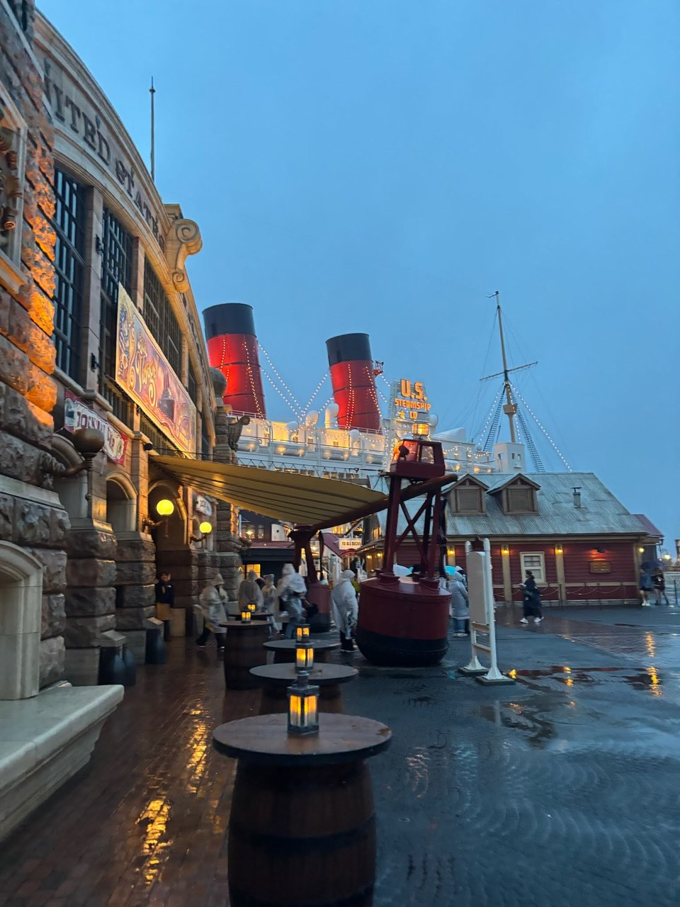
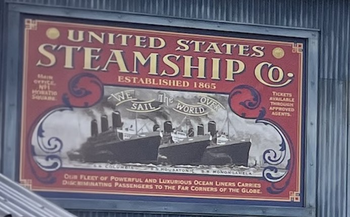
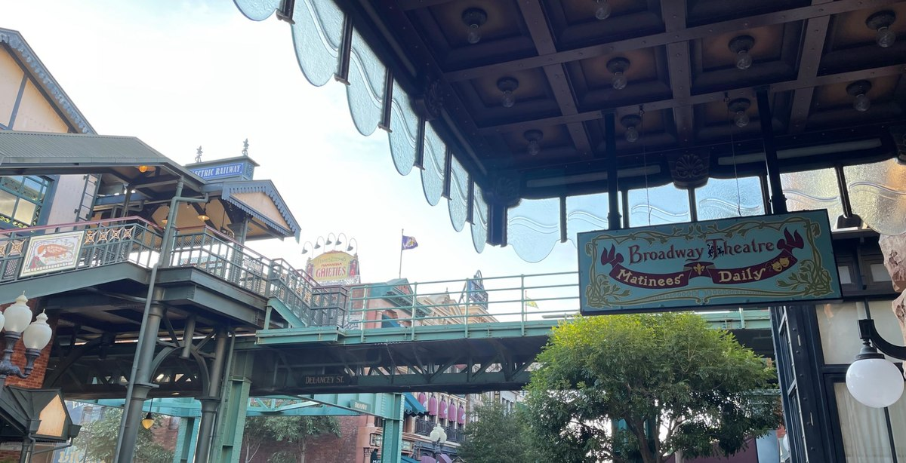
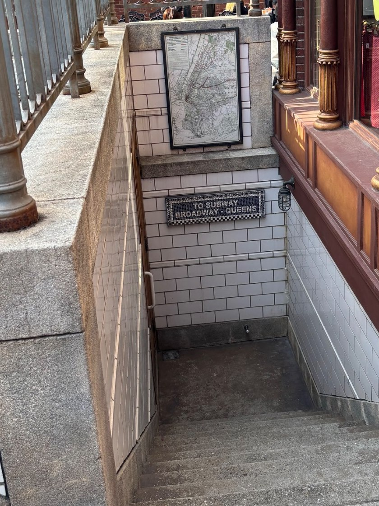
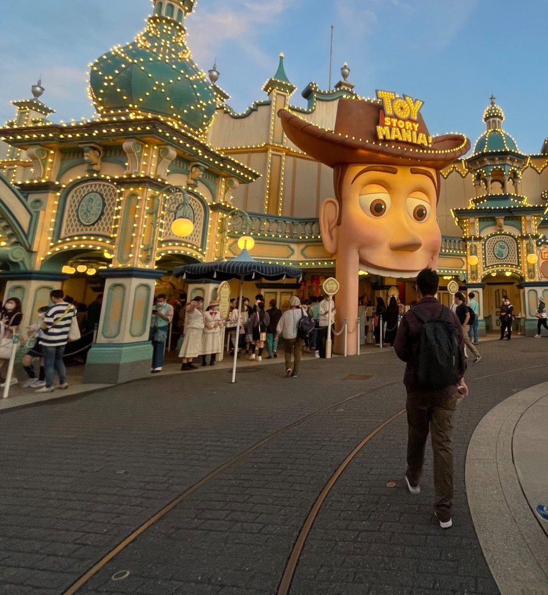
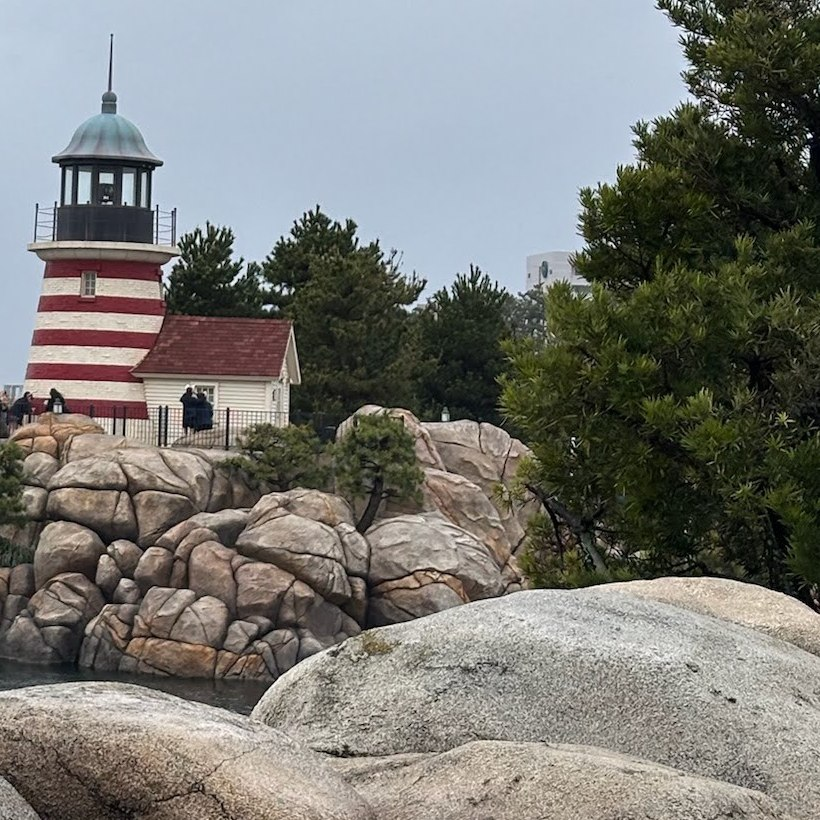

American Waterfront
アメリカンウォーターフロント ―― 線路と灯りが語る、変わりゆく港町20世紀初頭、ニューヨークの港には汽笛が響き、通りには自動車のエンジン音が加わり始めていました。頭上では高架鉄道が走り、路面にはかつてのトロリーの線路が残されています。夜になると、古い街灯の向こうに、白熱灯で縁取られた劇場の灯りが見えてきます。
その同じ海岸線の先には、白い灯台を望む小さな漁村、ケープコッドがあります。大都市と静かな村。風景こそ違いますが、どちらの港にも、船を動かし、店を守り、海を越えて新しい暮らしを始めた人々の足跡が残っています。
建物の礎石、船会社の看板、歩道に埋め込まれたレール、店先の古い道具。街の歴史は、目を向ければ手の届くところに刻まれています。
I. Two Harbors ―― 二つの顔を持つ港
アメリカンウォーターフロントには、異なる時間の流れを感じさせる二つの町があります。ひとつは、大西洋を行き来する客船と、世界中から訪れた人々でにぎわうニューヨーク。もうひとつは、ニューイングランドの海辺に広がる漁村ケープコッドです。
ニューヨークでは、建物が道に沿って高く立ち並びます。劇場の看板は遠くからでも目に入り、路面には線路が埋め込まれ、鉄骨の高架橋が通りを横切っています。岸壁へ近づけば、倉庫や船会社の建物、荷を運ぶための設備が集まっています。船から降りた品物が、ここから街の店や鉄道へ運ばれていくのでしょう。
一方、ケープコッドの道は低い木造の家々のあいだを通り、海へ向かって緩やかに開けています。通りの看板には魚や船の姿が描かれ、家々の庭には手仕事の気配が残っています。大都市のように新しい建物が次々と建つ場所ではなく、住民が顔を知る町です。
両者を結ぶのは海だけではありません。ニューヨークの港で始まる商いも、ケープコッドの小舟が支える暮らしも、水辺の仕事から生まれました。アメリカンウォーターフロントを歩くことは、同じ時代を生きる人々が、どのように異なる未来へ向かおうとしていたのかを見ることでもあります。
この街で最初に足を止めたいのは、港の突端に停泊する大きな客船です。その船の持ち主をたどると、ニューヨークを動かしている一族の名前に行き着きます。
II. The Endicotts ―― 街を築いた一族と、海を渡ってきた人々
S.S.コロンビア号を運航するU.S.スチームシップカンパニー。その経営者は、コーネリアス・エンディコット三世です。ニューヨークの実業界で知られる彼は、海運だけでなく新聞事業も手がけています。
ブロードウェイ・ミュージックシアターの隣にあるニューヨーク・グローブ通信の建物。その礎石に刻まれているのは、三世ではなく父コーネリアス・エンディコット二世の名前です。新聞社は、息子が富を築くより前から一族の事業を支えてきました。
船会社の建物へ回ると、柱には別の時代の碑文があります。1887年、エンディコット二世は、子孫の名が製鉄所、金鉱、鉄道、そして世界を結ぶ海運業とともに語られることを願いました。1909年には三世が、何も持たずにこの国へ渡った祖父の野心と、一族が成し遂げた成功を記しています。
二枚の碑文を読み比べると、一族が三世代にわたって築いたものが読み取れます。祖父は成功を求めて新しい国へ来た人でした。父は事業を広げ、その名を街に残そうとしました。そして息子は、海運と新聞を手にした実業家になっています。港にある巨大な船も、こうした家族の歴史の延長にあるのです。
しかし、この街で新しい生活を求めたのは、富豪の祖父だけではありません。
S.S.コロンビア号の近くにある小さな果物のワゴンは、ギリシャからやってきたパパダキス一家の店です。彼らはニューヨーク郊外の農園で果物を育て、朝まだ暗いうちから、主人と長男がワゴンを港まで運んでいます。大きな船会社の建物を背にした小さな店には、一日の仕事を始める家族の姿があります。
ウォーターフロントにあるレストラン櫻にも、海を越えた人の物語が残されています。店主チャーリー・タナカは、日本から渡ってきた移民です。魚市場として使われていた建物を食事の店へ変え、故郷を思い出せる料理を、同じように海を渡ってきた人々にふるまっています。店内には魚市場だったころの面影が残り、客は食卓を囲みながら、以前の建物の仕事を思い浮かべることができます。
さらに街の中心にあるマクダックス・デパートメントストアにも、移住と商売の歴史があります。スコットランドから来たスクルージ・マクダックは、質屋から商いを始め、問屋を経て豪華な百貨店を構えました。店の内部は三つの区画に分かれ、質屋と問屋の簡素な造りに対して、百貨店の区画には成功を誇る装飾が施されています。入口にある金貨の噴水は、その歩みを象徴するかのようです。
エンディコットの大事業、パパダキス一家の果物、タナカの料理、スクルージの百貨店。商いの規模は違っていても、それぞれが新しい土地で働き、自分の居場所をつくろうとしています。ニューヨークの歴史は、一人の大富豪だけで成り立っているのではありません。
III. S.S. Columbia ―― 大西洋を渡る船と、港で働く人々
港の突端に停泊するS.S.コロンビア号は、街のどこからでも目を引く大きな客船です。煙突と甲板を見上げれば、海へ向かうための船が、いまは港で休んでいることが分かります。

この船は、エンディコット三世のU.S.スチームシップカンパニーが運航する客船の一隻です。会社の広告には、コロンビア号とともにS.S.フーサトニック号、S.S.モノンガヒラ号の名も並んでいます。港に見える一隻の向こうには、別の海域を行き来する船と航路が広がっています。

船内には食事を楽しむためのダイニングルームがあり、Cデッキには「テディ・ルーズヴェルト・ラウンジ」があります。アメリカの冒険家であり大統領でもあったセオドア・ルーズヴェルトの愛称を冠したその部屋には、旅人たちが集う社交場の雰囲気が漂っています。船は人や荷を運ぶだけでなく、長い航海のあいだに人々が過ごす場所でもあります。
船を降り、岸壁の建物へ目を向けると、華やかな客室とは違う、港の仕事が姿を見せます。ドックサイドダイナーのある建物には、U.S.スチームシップカンパニーの名が残されています。港の倉庫は、船から荷物が降ろされ、仕分けられ、次の行き先を待つ場所です。
その貨物のなかには、遠いイタリアの港から届いたものもあります。箱や樽に書かれた「FRATELLI ZAMBINI」の文字は、メディテレーニアンハーバーで商いを続けるザンビーニ兄弟の名です。積み荷の一部はニューヨークを経由し、さらにブラジルのリオデジャネイロへ向かいます。港を離れた葡萄やオリーブの産物が、いくつもの海を渡って取引されています。
この名前を覚えておくと、隣の港へ戻ったときの風景が少し変わります。ザンビーニ家の葡萄畑や、旅人を迎えてきた一族の歴史は、ホテルミラコスタの記録にも残されています。港を隔てた二つの土地が、同じ商人の名で結ばれているのです。
波止場の片隅にあるリバティ・ランディング・ダイナーも、船の仕事から生まれた店です。かつてここには、エンジンやボイラーを直す「リバティ・ランディング・マリンエンジン・リペアーズ」がありました。修理屋の妻が夫や従業員、船乗りたちに料理をふるまううち、その味を目当てに人が集まり、通り側が飲食店へ改装されました。
通りからは料理屋の看板が見えますが、水辺から見ると、いまも機械修理屋の看板があります。近くには船のエンジンと工具まで残されています。表と裏で異なる名前を持つ建物には、料理屋になってからも続く夫婦の仕事が刻まれています。
IV. The City in Print ―― 新聞が伝える街の暮らし
港を離れてブロードウェイへ向かうと、建物の壁や駅の構内に、数えきれないほどの文字が現れます。新聞の求人広告、商品を売り込むポスター、芝居の案内。人が集まる大都市では、新しい知らせが毎日のように街を行き交っています。
ニューヨーク・グローブ通信の社屋は、ブロードウェイ・ミュージックシアターの隣にあります。エンディコット家の新聞社がこの場所にあることを思うと、街角に貼られた新聞売りの募集広告にも、働く人々の姿が重なります。新聞を売り歩く少年たちは「ニュージー」と呼ばれ、街頭を駆け回っていました。
高架鉄道の駅にも、広告が集まっています。おもちゃ、乗り物酔いの薬、のど飴、ニューヨーク・デリのサンドウィッチ。通勤客も旅人も通る駅は、店にとって商品を知ってもらう絶好の場所です。文字と絵が並ぶ壁は、この街の人々が何を求め、どこへ出かけようとしていたのかを伝えています。
ブロードウェイとウォーターストリートをつなぐデランシーストリートにも、広告が描かれた建物が並びます。そこに停まるデランシー・ケータリングは、ホットドッグを売る小さなワゴンです。行き交う人々に食事を届けるその店も、通りの看板と同じように街の暮らしの一部になっています。
劇場街のニューヨーク・デリには、さらに少し変わった歴史があります。もともとこの辺りには写真スタジオやスポーツバー、衣装店、小道具を扱う店などがありました。ところがデリが人気を集めるようになると、食事をする場所が足りなくなってしまいます。近隣の店主たちは、愛されているデリにこの街から去ってほしくないと考え、自分たちの場所を食堂として使えるようにしました。
店内でカメラや現像道具、ボクシンググローブ、舞台衣装を見かけるのは、そのためです。いくつもの店が一つの食事処につながったあとも、それぞれの仕事の痕跡は消されませんでした。ニューヨーク・デリは、劇場街の人々が集まってつくった店でもあります。
建物の外壁に目を戻すと、ここにも「Zambini Brothers’ Olive Oil」の広告があります。先ほど港の倉庫で見た名に、また出会いました。印刷された広告が商品を知らせ、船が品物を運び、店がそれを人々へ届ける。新聞と海運が同じ街で栄えている理由が、少し分かってきます。
ブロードウェイには、もうひとつの変化も現れています。劇場のひさしや看板に取りつけられた電球が、夜の通りを明るく照らしているのです。人々は商品だけでなく、芝居や音楽を楽しむためにも街へ集まってきます。
V. Two Tycoons ―― ハイタワー三世と、もう一つの家の選択
ニューヨークの港を見渡すと、S.S.コロンビア号とは別に、ひときわ異彩を放つ建物が目に入ります。ホテル・ハイタワーです。その創立者ハリソン・ハイタワー三世もまた、ニューヨークの実業界に大きな影響力を持つ人物でした。
ハイタワー三世とエンディコット三世は、ニューヨークの実業界で競い合うライバルでした。一方は世界を旅して集めた財宝や美術品で名を知られ、もう一方は船と新聞をはじめとする事業で富を築きました。街には、異なる方法で自分の名を残そうとした二人の人物の足跡があります。
しかし、ハイタワー三世は1899年の大みそか、ホテルから忽然と姿を消しました。かつて彼が誇った建物は長いあいだ閉ざされ、その後の運命は思いもよらない人物に託されます。
ホテルの保存と修復に取り組んだのは、ニューヨーク市保存協会の会長、ベアトリス・ローズ・エンディコットです。彼女は、ハイタワー三世のライバルだったエンディコット三世の娘でした。父が競い合った人物の遺産を、娘が守ろうとしています。
この選択に、父がどのような思いを抱いたのかは分かりません。それでも、二人の実業家の競争が、一族を越えて別の物語へつながったことは確かです。失踪の夜と、閉ざされたホテルが再び人々を迎えるまでの経緯は、ホテル・ハイタワーの記録に残されています。
ニューヨークには、成功者の名前を刻んだ石碑がある一方、失われかけた建物を守ろうとする人もいます。海を渡る船と、高くそびえるホテル。そのどちらも、街が残そうとした時代の証しです。
VI. Tracks and Lights ―― 地上・高架・地下へ広がる都市
ブロードウェイを歩いていて、足元に埋め込まれた二本の細い鉄の線に気づくことがあります。線路は通りに沿って伸びていますが、その上を車両が通る姿は見えません。
少し顔を上げれば、高架の上を赤と青の車両が走っています。さらに街の別の場所には、地下へ降りる鉄道入口があります。地上と高架と地下。それぞれの高さに交通の道が重なっていることが、この街の急速な変化を物語っています。
路面に残された、最初の道
かつてニューヨークの人々を運んでいたのは、通りの上を進むトロリーでした。線路に沿って小さな電車が行き交い、乗客を商店や劇場、港へと届けていました。路面に線路があれば、人々が住む場所と働く場所を直接結ぶことができます。
しかし、大都市に自動車が増えると、道路は次第に混み合うようになります。荷物を運ぶ車、街を移動する自動車、乗客を乗せたトロリーが、同じ通りを使うようになったからです。
渋滞を解消するため、線路は道路の上へ移されていきました。いま高架を走るディズニーシー・エレクトリックレールウェイは、こうした交通の変化を受け継いでいます。足元に残された二本の線路は、街の上に新しい道が造られる前の姿を伝えています。
デランシーストリートの駅
高架鉄道の駅へ向かうと、街の仕事がいっそう近くに感じられます。デランシーストリートに面した駅舎は、鉄骨の高架と一体になり、構内には広告やポスターが貼られています。人々の移動を支える駅は、同時に、新しい商品や仕事を知る場所でもありました。

アメリカンウォーターフロントの駅には、かつての写真を飾った駅長室もあります。車両は赤と青に彩られ、大きなアーチ形の窓を持っています。通りから見上げていた高架へ上ると、今度は街の建物の屋根や看板が、窓の向こうに並びます。
この鉄道は、ニューヨークの街を抜けたあと、ポートディスカバリーへ向かいます。向こうの駅には、未来の都市や陸・海・空の乗り物を描いた大きな壁画があります。古い都市の高架鉄道に乗り、未来の港の記録へたどり着く。同じ一両から、技術の異なる時代を眺められるのも、この鉄道ならではの旅です。
地下へ続く、もう一つの駅
ところが、ニューヨークの交通は、高架だけで完結していません。建物のあいだに地下鉄の入口があり、その先には地上から見えない路線が続いています。

路面に残るトロリーの線路は、かつて人々が通った道を教えてくれます。高架鉄道は、その道が空中へ広がったことを伝えています。そして地下鉄の入口は、同じ街が足元のさらに下へも伸びていることを示しています。
地下鉄の列車を直接見ることはできなくても、入口があるだけで街の広がりは変わります。目に見える建物の下にも、乗客が行き交う別のニューヨークがあるのです。
線路の終点、トイビル・トロリーパーク
通りに残されたレールを追うように進むと、港の遊園地「トイビル・トロリーパーク」へたどり着きます。入口のアーチには、その名と「TTP」の印が掲げられています。
この遊園地を経営しているのは、トイビル・トロリーカンパニーです。かつてトロリー会社は、人々に自社の路線を使ってもらうため、終点に遊園地を設けることがありました。この場所も、もともとはトロリーの終点でした。
その名残が、地面をぐるりと回る線路です。車両がここまでやって来て、向きを変え、再び街へ戻っていった道筋が残されています。入口の華やかな飾りだけを眺めていると見落としてしまいそうですが、遊園地の歴史は足元に書かれています。

終点のレールには、二本の引き込み線があります。一本は大きな扉のある建物へ伸び、その奥にはトイビル・トロリーカンパニーの車両保管・整備場があります。もう一本の先にあるのは、「スリンキー・ドッグのギフトトロリー」です。
この店は、もともと乗客を運んでいたトロリーの車両でした。いまは商品を並べる店に姿を変えていますが、車体は線路の上に停まったままです。スリンキー・ドッグが車掌帽をかぶっていることにも、かつての役割が残されています。
園内にはトロリーの路線図もあります。地面の線路、整備場へ続く扉、改造された車両。三つを見比べると、ここが単におもちゃを集めた遊園地ではなく、交通会社が育てた行楽地だったことが分かります。
海風にさらされる建物には、塗装を何度も塗り重ねた跡が残っています。店や遊具は人々に楽しまれながら、傷んでは直されてきました。トイ・ストーリー・マニア！へ向かう人々の足元にも、長く使われてきた港の時間が続いています。
ガス灯から電灯へ、夜が変わる
交通と同じように、ニューヨークの夜も変わりつつあります。古い通りにはガス灯の時代を思わせる街灯が残り、新しい劇場街では電球を並べた看板が輝いています。
ガス灯は、夜の街を照らす大切な設備でした。しかし電気が広がると、人々は街灯だけでなく、店の窓や広告、劇場のひさしにも電球を取りつけるようになります。灯りは道を安全に歩くためのものから、遠くの人を店へ引きつけるものへと役割を広げていきました。
ブロードウェイ・ミュージックシアターの前では、その違いがよく分かります。建物の石造りの正面には海を思わせる彫像が並び、その下では白熱灯が劇場の名前を浮かび上がらせています。かつて暗かった通りに無数の電球が輝く光景は、「Great White Way」という名で知られるようになりました。
昼間、劇場の前で見上げた装飾は、夜になると光によって別の輪郭を持ちます。電灯は街の姿を一変させる新しい技術でした。同時に、人々が夜になっても芝居や買い物を楽しめる、新たな時間を生み出しました。
変わっているのは灯りだけではありません。電報から電話へ、馬車から自動車へ。以前の道具が姿を消しきらないうちに、次の技術が街へ入ってきます。だからこそ、アメリカンウォーターフロントでは古いものと新しいものが隣り合っています。
路面には使われなくなった線路があり、その上の高架では電車が走り、地下には見えない鉄道が続く。古い街灯のそばには、電球で照らされた劇場がある。ひとつの完成した未来が置かれているのではありません。街が毎日少しずつ変わっていく、その途中に立っているのです。
VII. Cape Cod ―― 海辺の村が守ってきたもの
ニューヨークの高架鉄道と劇場街を離れ、海辺を進んでいくと、建物の高さが次第に低くなります。白い灯台が見え、港のまわりには、漁の道具や木造の家々が集まっています。ここがケープコッドです。

この町では、看板を見ればその家で営まれてきた仕事が分かります。漁師の小屋の看板はロブスターの形をしており、製帆所の看板には帆を張った船が、船員たちの宿の看板には揺り椅子に座った船乗りが描かれています。文字を読まなくても、道を歩くだけで住民の暮らしが伝わってきます。
屋根の上にあるのは、風見鶏ならぬ「風見ネコ」です。昔から船乗りたちにとって、船を傷めるネズミから荷物や船体を守る猫は大切な仲間でした。港町の屋根に猫の姿が掲げられていることにも、海とともに暮らしてきた人々らしさがあります。
村の中心には、白い時計台のあるタウンホールが建っています。ここでは独立記念日を祝う料理大会「クックオフ」が開かれ、住民たちは自慢の料理を持ち寄ります。建物の四方の壁には、ケープコッドの歴史を描いた素朴な絵が並んでいます。名高い画家の大作ではなく、自分たちが暮らす町を、自分たちの手で残した記録です。
タウンホールの一部は消防署として使われており、消防馬車や道具も見つかります。ここでは食事をする場所と、住民の安全を守る場所が同じ建物にあります。ニューヨークのように建物の役割を大きく分けるより、町の人々がひとつの場所を分け合っています。
「アーント・ペグズ・ヴィレッジストア」の前には、風が吹くとペグおばさんと猫たちが動く、手作りの看板があります。冒険好きなペグおばさんは、海を愛し、やがて同じように甘いものを好む船長と出会いました。二人は菓子を分け合いながら航海を重ね、いまペグおばさんはその思い出を胸に、キャンディーを作っています。店の横には小さな家庭菜園もあり、海での冒険を重ねた彼女が、いまは村で穏やかに暮らしていることがうかがえます。
村の海辺には、遠くから帰る船を迎える灯台があります。大きな客船が人と物資を運ぶニューヨークに対し、ここでは、ひとつの船が無事に港へ戻ることの重みが感じられます。家族や隣人の顔が思い浮かぶような、海との距離の近い町です。
ニューヨークで見たエンディコット家の碑文は、一族が何を築き、後世にどのような名を残したかったかを語っていました。ケープコッドの壁画や看板は、もっと小さな出来事を覚えています。漁に出る人々、店を守る人々、祭りの日に集う隣人たち。残そうとしているのは、誰か一人の成功ではなく、町で受け継がれてきた暮らしそのものなのかもしれません。
夕暮れの港を歩くと、ニューヨークの高い建物の上に劇場の灯りがともり、海のこちら側には灯台と家々の灯りが見えます。新しい時代へ急ぐ街と、昔からの暮らしを守る村。どちらにも同じ海風が吹いています。
街が変わっても、線路や看板、石碑や壁画がすぐに消えるわけではありません。使われなくなったものにも、持ち主が変わったものにも、そこに生きた人々の時間が残ります。アメリカンウォーターフロントの歴史は、そんな小さな記録をたどることで、いまも道の先へ続いていくのです。
参考資料
- 東京ディズニーリゾート・ブログ「ストーリーの“登場人物”は誰？～アメリカンウォーターフロント編～」（2020年8月18日）
- 東京ディズニーリゾート・ブログ「ニューヨークの富を二分する2人の実業家」（2021年8月26日）
- 東京ディズニーリゾート・ブログ「とっても新鮮！働き者の家族が育てたフルーツ♪」（2013年12月12日）
- 東京ディズニーリゾート「レストラン櫻」（施設紹介ページ）
- 東京ディズニーリゾート「マクダックス・デパートメントストア」（施設紹介ページ）
- 東京ディズニーリゾート「テディ・ルーズヴェルト・ラウンジ」（施設紹介ページ）
- 東京ディズニーリゾート・ブログ「2つのレストランを結ぶ、ある兄弟とは？」（2020年9月23日）
- 東京ディズニーリゾート・ブログ「ニューヨークの波止場を舞台にした、夫婦の商売繁盛記」（2012年12月10日）
- 東京ディズニーリゾート・ブログ「大都市ニューヨークを彩る広告と街を支える事業家」（2019年1月29日）
- 東京ディズニーリゾート・ブログ「あなたも東京ディズニーシーでタイムトリップ！？」（2016年10月19日）
- 東京ディズニーリゾート・ブログ「劇場街で大人気♪ミュージカルファンや役者たちが行きつけのデリカテッセンの秘密。」（2014年5月20日）
- 東京ディズニーリゾート・ブログ「毎年恒例♪夏休みの宿題シリーズ！今年のお題は・・・？」（2020年8月11日）
- 東京ディズニーリゾート・ブログ「東京ディズニーシーにある“偉大な白い道”。その正体は？」（2019年4月26日）
- 東京ディズニーリゾート・ブログ「ニューヨークを走る乗り物」（2021年2月24日）
- 東京ディズニーリゾート・ブログ「アトラクションキャストが教える！見どころ紹介 〜「ディズニーシー・エレクトリックレールウェイ」編〜」（2019年12月17日）
- 東京ディズニーリゾート・ブログ「トロリーの終点に作られた遊園地『トイビル・トロリーパーク』」（2017年9月20日）
- 東京ディズニーリゾート・ブログ「おもちゃをテーマにした遊園地へようこそ！」（2017年4月10日）
- 東京ディズニーリゾート・ブログ「東京ディズニーシーで見つける“郷土芸術”」（2019年3月13日）
- 東京ディズニーリゾート「アーント・ペグズ・ヴィレッジストア」（施設紹介ページ）
- 東京ディズニーリゾート「ケープコッド・クックオフ」（施設紹介ページ）
- 東京ディズニーリゾート・ブログ「商売上手な“FRATELLI ZAMBINI”」（2014年6月11日）
- 東京ディズニーリゾート「ディズニーシー・エレクトリックレールウェイ（アメリカンウォーターフロント）」（施設紹介ページ）
資料確認日：2026年11月23日